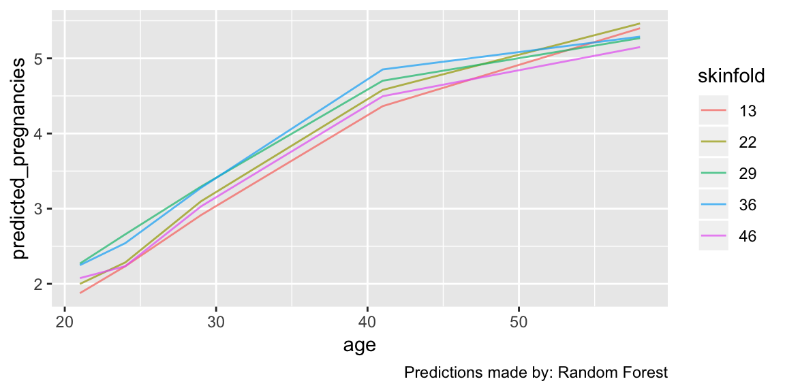
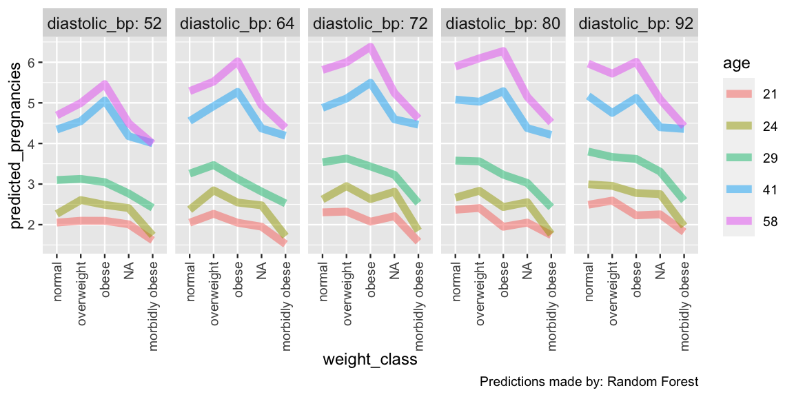
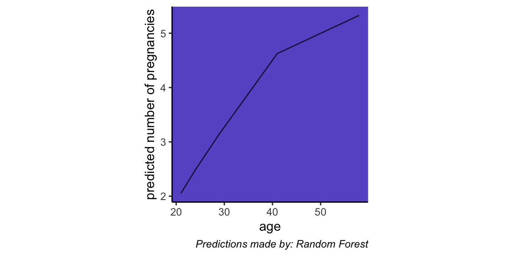

plot.explore_df.RdPlot Counterfactual Predictions
# S3 method for explore_df plot(x, n_use = 2, aggregate_fun = median, reorder_categories = TRUE, x_var, color_var, jitter_y = TRUE, sig_fig = 3, font_size = 11, strip_font_size = 0.85, line_width = 0.5, line_alpha = 0.7, rotate_x = FALSE, nrows = 1, title = NULL, caption, print = TRUE, ...)
| x | A explore_df object from |
|---|---|
| n_use | Number of features to vary, default = 4. If the number of
features varied in |
| aggregate_fun | Default = median. Varying features in x are mapped to the x-axis, line color, and vertical- and horizontal facets. If more than four features vary, this function is used to aggreagate across the least-important varying features. |
| reorder_categories | If TRUE (default) varying categorical features are
arranged by their median predicted outcome. If FALSE, the incoming level
orders are retained, which is alphabetical by default, but you can set your
own level orders with |
| x_var | Feature to put on the x-axis (unquoted). If not provided, the most important feature is used, with numerics prioritized if one varies |
| color_var | Feature to color lines (unquoted). If not provided, the most
important feature excluding |
| jitter_y | If TRUE (default) and a feature is mapped to color (i.e. if there is more than one varying feature), the vertical location of the lines will be jittered slightly (no more than 1 avoid overlap. |
| sig_fig | Number of significant figures (digits) to use in labels of numeric features. Default = 3; set to Inf to not truncate decimals. |
| font_size | Parent font size for the plot. Default = 11 |
| strip_font_size | Relative font size for facet strip title font. Default = 0.85 |
| line_width | Width of lines. Default = 0.5 |
| line_alpha | Opacity of lines. Default = 0.7 |
| rotate_x | If FALSE (default), x axis tick labels are positioned horizontally. If TRUE, they are rotated one quarter turn, which can be helpful when a categorical feature with long labels is mapped to x. |
| nrows | Only used when the number of varying features is three. The number of rows into which the facets will be arranged. Default = 1. NULL lets the number be determined algorithmically |
| title | Plot title |
| caption | Plot caption. Defaults to model used to make counterfactual predictions. Can be a string for custom caption or NULL for no caption. |
Print the plot? Default is FALSE. Either way, the plot is invisibly returned |
|
| ... | Not used |
ggplot object, invisibly
# First, we need a model set.seed(4956) m <- machine_learn(pima_diabetes, patient_id, outcome = pregnancies, models = "rf", tune = FALSE)#>#>#> #>#> #> #>#>#> #> #># Then we can explore our model through counterfactual predictions counterfactuals <- explore(m) # By default only the two most important varying features are plotted. This # example shows how counterfactual predictions can provide insight into how a # model maps inputs (features) to the output (outcome). This plot shows that for # this dataset, age is the most important predictor of the number of pregnancies # a woman has had, and the predicted number of pregnancies rises basically # linearly from approximately 20 to 40 and then levels off. plot(counterfactuals)#># To see the effects of more features in the model, increase the value of # `n_use`. You can also specify which of the varying features are mapped to the # x-axis and the color scale, and you can customize a variety of plot attributes plot(counterfactuals, n_use = 3, x_var = weight_class, color_var = age, font_size = 9, strip_font_size = 1, line_width = 2, line_alpha = .5, rotate_x = TRUE, nrows = 1)#># And you can further modify the plot like any other ggplot object p <- plot(counterfactuals, n_use = 1, print = FALSE)#>p + ylab("predicted number of pregnancies") + theme_classic() + theme(aspect.ratio = 1, panel.background = element_rect(fill = "slateblue"), plot.caption = element_text(face = "italic"))